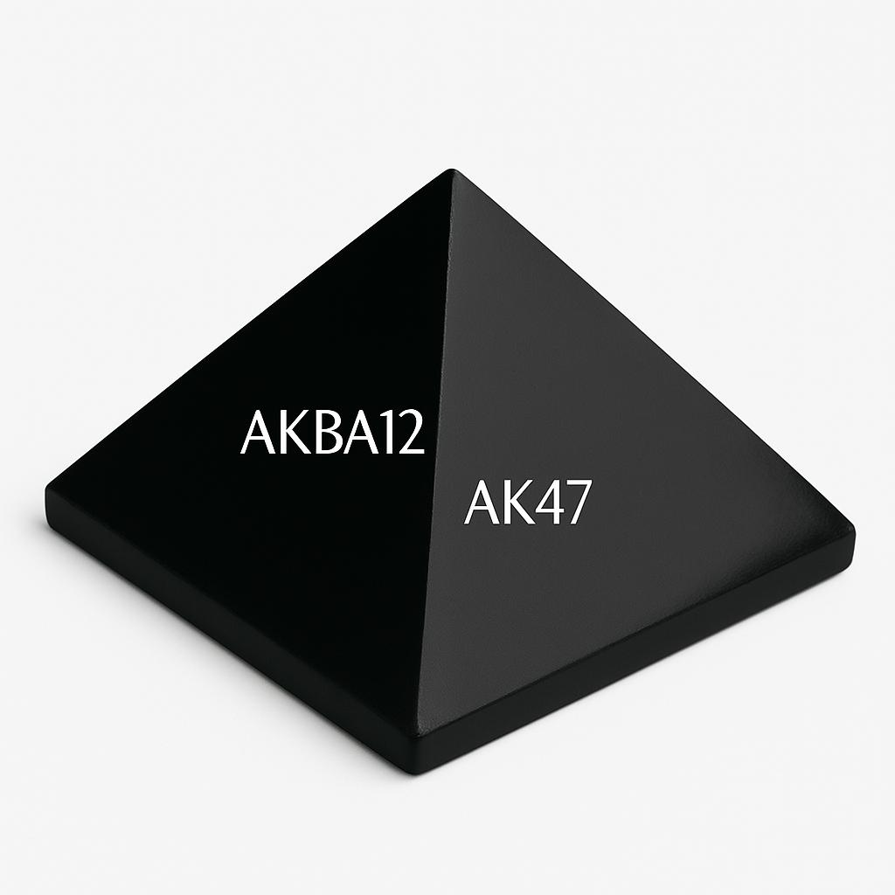

Bienvenue sur mon site personnel
Bonjour, je suis Ali Abdoulkarim Ben, étudiant de 20 ans. Ce site est mon projet pour l'UE Client Web de la Licence 2 MIASHS.
Il a pour but de vous présenter mon parcours académique, mes expériences professionnelles ainsi que mes passions.
Date de mise en ligne :